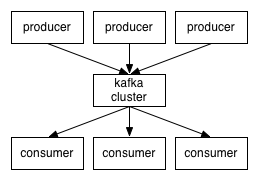

<DOCTYPE html>
<html>
  <head>
    <title>Apache Kafkaを使ったマイクロサービス基盤</title>
    <meta http-equiv="Content-Type" content="text/html; charset=UTF-8"/>
    <script async src="//platform.twitter.com/widgets.js" charset="utf-8"></script>
    <script async src="https://platform.twitter.com/widgets.js" charset="utf-8"></script>
    <style type="text/css">
      @import url(//fonts.googleapis.com/css?family=Droid+Serif:400,700,400italic);
      @import url(//fonts.googleapis.com/css?family=Ubuntu+Mono:400,700,400italic);

      @import url(https://fonts.googleapis.com/css?family=Droid+Serif:400,700,400italic);
      @import url(https://fonts.googleapis.com/css?family=Ubuntu+Mono:400,700,400italic);

      body {
        font-family: Consolas, 'Liberation Mono', Menlo, Courier, monospace;
      }
      ul li ul li {
        font-size: 75%;
      }
      p {
        font-size: 150%;
      }
      li {
        font-size: 30px;
      }
      .remark-slide-content h1 {
        font-size: 70px;
      }
      .remark-slide-content h2 {
        font-size: 50px;
      }
      h1, h2, h3 {
        font-family: Consolas, 'Liberation Mono', Menlo, Courier, monospace;
        font-weight: normal;
        text-align: center;
      }
      img {
        max-width : 100%;
        max-height : 70%;
        display: block;
        margin-left: auto;
        margin-right: auto;
        border: 1px gray solid;
      }
      .remark-code, .remark-inline-code {
        font-size: 20px;
        font-family: Consolas, 'Liberation Mono', Menlo, Courier, monospace;
      }
      /* Two-column layout */
      .left-column {
        width: 50%;
        float: left;
      }
      .right-column {
        width: 45%;
        float: right;
      }
    </style>
  </head>
  <body>
    <textarea id="source">

class: center, middle

# Apache Kafka<br/>を使った<br/>マイクロサービス基盤

[2016/01/31 Scala Matsuri](https://scalamatsuri.org/)


---
class: center, middle

発表後に追記

[当日の発表動画はこちら](https://www.youtube.com/watch?v=64HNeksRx5I)

---
class: middle


- twitter [@xuwei_k](https://twitter.com/xuwei_k)
- github [@xuwei-k](https://github.com/xuwei-k)
- blog <https://xuwei-k.hatenablog.com>

---
class: middle

## 今日たぶん話すこと

- Kafkaの簡単な説明
- 仕事としてどういうものを作ったか、やっていたか
- Kafka使う上での具体的な知見、設定例
- ScalaのClientについて
- Kafkaのつらいところ色々
 - GC, Clientが残念, コードが残念, ボトルネック箇所

---
class: center, middle

## Kafkaとは

---
class: center, middle


[Franz Kafka](https://ja.wikipedia.org/wiki/%E3%83%95%E3%83%A9%E3%83%B3%E3%83%84%E3%83%BB%E3%82%AB%E3%83%95%E3%82%AB)

---
class: center, middle

## Kafkaとは


https://github.com/apache/kafka
https://kafka.apache.org/


---
class: middle

## Kafkaとは

- ScalaとJavaで作られてる
- LinkedInが最初に作ってOSS化
- その後Apacheプロジェクト


---
class: middle

## Kafkaとは

- わりといくつかの大企業で使ってるらしい
- [公式のWikiに一覧がある](https://cwiki.apache.org/confluence/display/KAFKA/Powered+By)
- LinkedIn, Yahoo, Twitter, Netflix, Square, Tumblr, PayPal, Cisco

---
class: middle

## Kafkaとは

- 巨大なメッセージキューのような何か？
- サーバー側がどこまで読み込んだのかを直接管理しない
- 一定期間か量までは、何度読み込んでも保持され、古いものも(原理的には)何度でも読める

---
class: center, middle



---
class: center, middle


---
class: center, middle


---
class: middle

## Kafkaとは

- 2016/01/31現在の最新版は0.9.0.0
 - 2015年11月リリース
- [Amazon Kinesis](https://aws.amazon.com/jp/kinesis/)と似てるらしい？
- Kafka自体の一般的な詳細な解説は時間なくなるので省略

---
class: middle, center

## Kafkaとは

いっぱいはてブついてて多分わかりやすい(?)ので<br/>あとは以下の記事か、公式ドキュメントを

## [Apache Kafkaに入門した](https://deeeet.com/writing/2015/09/01/apache-kafka/)

---
class: middle

## Kafkaとは

- 独自なバイナリプロトコル( [プロトコル詳細](https://cwiki.apache.org/confluence/display/KAFKA/A+Guide+To+The+Kafka+Protocol) )
- 0.8までは認証がなかった。0.9で追加された

---
class: middle

## 0.8までは認証がない

- なんでも出来てしまう
 - Topicの追加、削除、publish、subscribe
- 危険性を考えると、そのまま(社内ですら)公開できない


---
class: middle

## マイクロサービス基盤・・・？

- 別に社内的にはそう呼ばれてるわけではないけど、なんとなくそういう言い方してみた
- とにかく、いろんな社内の様々なサービス同士のデータやりとりするのに使う


---
class: middle

- マイクロサービス増えると連携の仕組み工夫したほうがいいよね？
- なぜそこでKafkaが適切なのか？


そういった話さえも省略して、ひたすら具体的な実践結果を報告していく
<br/><br/>
<span style="font-size: 60%;">そういった話は探せば出てくるので</span>

---
class: middle

## 社内的なサービス要件

- 落ちない、ずっと動き続ける
 - 当たり前だが、他のシステムよりそれが求められる
- とにかくAt Least Onceの死守
- Exactory Onceや順序保証はひとまずしない

---
class: middle

## 歴史

- 2015年2月
 - 作りはじめる([RabbitMQ](https://www.rabbitmq.com/))
 - <span style="font-size: 70%;">kafkaを一瞬検討したが、publishのack出来ないのでは？と勘違いして却下</span>
- 2015年3月, 4月
 - 作るというよりは、ほぼRabbitMQの検証や設計の話し合い


---
class: middle

## 歴史
- 2015年5月
 - スケールや耐障害性考えるとRabbitMQ辛いね、となり、Kafkaで作ることになるという方向転換
- 2015年6, 7, 8 月
 - 頑張って実装
 - Akkaつらい

---
class: middle

## 歴史
- 2015年9月
 - 大体完成してて、ひたすら負荷試験と改善の日々
- 2015年10月
 - 動き出した(まだ本格的な利用チームなし)

---
class: middle

## 歴史
- 2015年11月
 - 社内のいろんなところから試験的に利用してもらうための調整
 - 管理ツールなどを充実させる
 - kafka 0.9 がリリースされる
- 2015年12月
 - kafka 0.9 の調査や検証
 - ある程度利用するチームが増えてくる

---
class: middle

## 歴史

- 2016年1月
 - kafka 0.9 の調査や検証
 - つい数日前に無停止で0.8.2.1から0.9.0.0のアップデートに成功！

---
class: middle

## 0.8から0.9の無停止<br/>アップデート

- それぞれのbroker1台毎に順にやる
- zookeeperはアップデート必要なし

---
class: middle

## 0.8から0.9の無停止<br/>アップデート

- 全broker設定に `inter.broker.protocol.version=0.8.2.X` を追加
- その状態でkafkaを0.9にアップデート
- `inter.broker.protocol.version`を`0.9.0.0`に変更
- client側をアップデート(任意)

---
class: middle

## RabbitMQやめた理由

- subscriber数に対してスケールアウトしない気がした(ある意味設計上の問題？)
- publisherのスケール面倒
- 分散DBとしてのスケールアウト性能がkafkaに比べたら弱い
- kafkaのほうが、subscriberが多い場合データ保持量が少なくてすむ

---
class: middle

## kafka以外の全体的なシステム

- 他とのインターフェイス部分
 - httpでデータを受け付ける
 - httpでデータ送る
 - AMQPでデータ送る
 - その他も増えるかも？(pull型作りたい)
- つまり(今のところ)Kafkaと直接通信させない
- その他MySQL(ちょっとした管理用データ)、manageサーバー、ログ収集して置くところ、など

---
class: middle

## 既存のhttpアダプタないの？

- 多少ある
 - https://github.com/confluentinc/kafka-rest
 - 少なくとも検証当時(2015年の春、夏くらい？)は、<br/>機能足りないという判断で、使うのやめた

---
class: middle

## httpでの受け付け

- [playframework(2.4)](https://playframework.com/)で受け取る
- publish可能なトピックやパブリッシャの権限チェック
- kafkaに送る
- レスポンス返す


---
class: middle

## kafkaから取得して他へ<br/>送りつける

- サブスクライバ毎にAkka Actor動かす(akka2.3)
- kafkaから一定数(100個くらい)とってくる
- 送る
 - httpなら事前に指定されたURLに
 - AMQPなら指定されたキューに入れる
- 全部送ったらコミット

---
class: middle

## kafkaから取得して他へ<br/>送りつける

- At Least Onceを死守するためのコミットタイミングと、パフォーマンスの兼ね合いが難しい
- Kafkaに入れる方に比べて100倍くらい(?)難しい
- [reactive-kafka](https://github.com/softwaremill/reactive-kafka)使っても良かった気がする・・・？(全部akkaで独自実装)

---
class: middle

## kafkaの冗長度など

- replication factorは3に
- 書き込むときは3台全部に書き込まないとOKにしてない
- LinkedInより厳しい？
- LinkedInは基本2と書いてあった記憶
- min.insync.replicaは2

---
class: middle

## [設定について](https://kafka.apache.org/documentation.html#configuration)

- 結構多くの設定項目がある
- [デフォルトだとat least onceにならない](https://permalink.gmane.org/gmane.comp.apache.kafka.user/8519)
- 接続情報などの、当たり前に変える設定を除いて紹介
- まだまだ設定を調整しての試験をやりきれていない
- 0.8のときに調査検証したのが主なので、0.9になってもっと色々あるかも？

---
class: middle

## デフォルトから変えた設定(broker)

- `auto.create.topics.enable=false`
- `unclean.leader.election.enable=false`
 - デフォルトのままだと、最悪データ消える?
- `delete.topic.enable=true`
 - テストとかで必要だった(?)

---
class: middle

## デフォルトから変えた設定(broker)

- `kafka.offsets.topic.num.partitions=200`
 - デフォルト50
 - 後から変えられない、かつパフォーマンスに影響するので慎重に考える必要？

---
class: middle

## デフォルトから変えた設定(producer)

- `metadata.fetch.timeout.ms`
 - 6000 から 3000
- `timeout.ms`
 - 30000 から 3000

---
class: middle

## デフォルトから変えた設定(producer)

- `acks`
 - 1 から all
 - 重要
- `retries`
 - 0 から 3
 - 3という深い理由なし?

---
class: middle

## デフォルトから変えた設定(consumer)

- `auto.offset.reset=smallest`
- `offsets.storage=kafka`
- `dual.commit.enabled=false`
- `auto.commit.enable=false`
- `consumer.timeout.ms`

---
class: middle

## 罠など

- clientがどれ使えばいいかわかりづらい問題
 - とくに0.9出る前は酷かった
- 公式にそれぞれ2種類以上ある
 - Consumerは厳密には3種類
- producerはnewがいいらしい
 - new使った
- 0.8時点では、新consumerは作りかけなのにjarがcentralにpublishされてて罠
 - 0.9では一応完成したらしい？

---
class: middle

## 作りかけなのに<br/>maven centralに<br/>publish？

- [null固定で返す](https://github.com/apache/kafka/blob/0.8.2.2/clients/src/main/java/org/apache/kafka/clients/consumer/KafkaConsumer.java#L555)
 - そもそも `// TODO Auto-generated method stub` というIDEが生成したものそのまま
- [UnsupportedOperationException投げる](https://github.com/apache/kafka/blob/0.8.2.2/clients/src/main/java/org/apache/kafka/clients/consumer/KafkaConsumer.java#L615)
- [何もしない。実装が空](https://github.com/apache/kafka/blob/0.8.2.2/clients/src/main/java/org/apache/kafka/clients/consumer/KafkaConsumer.java#L594)

---
class: middle

## 依存関係図

- [依存関係図 0.8.2.1](https://xuwei-k.github.io/kafka-0.8.2.1-dependency-graph.svg)
- [依存関係図 0.9.0.0](https://xuwei-k.github.io/kafka-0.9.0.0-dependency-graph.svg)

---
class: middle

- 互換性のため、(0.8では？)デフォルトだとoffsetの保存先がzookeeperだが、明示的にkafkaに変更する
  - そもそもoffsetをサーバーで管理しないと言いながら、offset自体を保存するのにkafka使う構造になってるというのを理解するのに時間かかった

---
class: middle

- LinkedInは(少なくとも古いversionで動かす際)zkがボトルネックになるから、SSD使ってるらしいみたいな知見

---
class: middle

## つらかったところ

- KafkaのソースがScala的に残念
- producerもconsumerも、APIがいけてなくて使いづらい(とくにconsumer)
 - 0.9になって新しいconsumerになったので、それへの移行計画中
- topic作り過ぎるとパフォーマンス落ちる？
- 高負荷かけるとGCで止まる

---
class: middle

## Kafkaのコードが残念

<blockquote class="twitter-tweet" lang="en"><p lang="ja" dir="ltr">kafkaのコード、tryが値を返すことすら理解できてない部分がある&#10;(tryが値を返すことを利用すれば必要ないはずの、tryブロックの前段階でvar用意してそれに代入してる)&#10;し、ほんとなんでこの人達Scalaで書いてるんだ・・・&#10;<a href="https://t.co/feoE6fYW6C">https://t.co/feoE6fYW6C</a></p>&mdash; Kenji Yoshida (@xuwei_k) <a href="https://twitter.com/xuwei_k/status/613270525893173248">June 23, 2015</a></blockquote>

---
class: middle

## Kafkaのコードが残念

<blockquote class="twitter-tweet" lang="en"><p lang="ja" dir="ltr">ここ&#10;<a href="https://t.co/SSxw8lwQNB">https://t.co/SSxw8lwQNB</a>&#10;<a href="https://t.co/pYsYb6sSm2">https://t.co/pYsYb6sSm2</a>&#10;も、timeメソッドはちゃんと式の値返すようになってるのに、わざわざvar用意して代入しててウケるwww(死んだ目をしながら)</p>&mdash; Kenji Yoshida (@xuwei_k) <a href="https://twitter.com/xuwei_k/status/613272298410283008">June 23, 2015</a></blockquote>

---
class: middle

## Kafkaのコードが残念

<blockquote class="twitter-tweet" lang="en"><p lang="ja" dir="ltr">kafkaコミッタが書いたJavaコードのpull reqに「int定数でなくenum使おう」とか「iteratorはwhileで回すのでなく拡張for」みたいな低レベルな指摘がされていてつらい。Scala書けないからJavaになるのかと思ったけど、Javaもまともに書けないのか</p>&mdash; Kenji Yoshida (@xuwei_k) <a href="https://twitter.com/xuwei_k/status/642047660011053056">September 10, 2015</a></blockquote>

---
class: middle

## Kafkaのコードが残念

<blockquote class="twitter-tweet" lang="en"><p lang="ja" dir="ltr">「Option.getのかわりにgetOrElse使おう」&#10;「なんで？」&#10;「それはね(ry」&#10;&#10;という会話をapache kafkaのpull req欄で見かけてしまって、今日も辛い・・・&#10;(なんで？と言った人はたぶんコミッターじゃないけど、すでに30コミットくらい貢献してる人)</p>&mdash; Kenji Yoshida (@xuwei_k) <a href="https://twitter.com/xuwei_k/status/647366400982409216">September 25, 2015</a></blockquote>

---
class: middle

## Kafkaのコードが残念

<blockquote class="twitter-tweet" lang="en"><p lang="ja" dir="ltr"><a href="https://twitter.com/gakuzzzz">@gakuzzzz</a> 罰として(?) kafkaのソースコード読んでおいてください&#10;(今日も、publicかつvarかつmutableなコレクションをフィールドに保持したclassを沢山見かけて辛くなりました・・・)</p>&mdash; Kenji Yoshida (@xuwei_k) <a href="https://twitter.com/xuwei_k/status/644467660026044416">September 17, 2015</a></blockquote>

---
class: middle, center

Publicかつvarかつmutableなコレクション!?


[KafkaController.scala](https://github.com/apache/kafka/blob/0.9.0.0/core/src/main/scala/kafka/controller/KafkaController.scala#L55-L58)

---
class: middle

## Kafkaのコードが残念

<blockquote class="twitter-tweet" lang="en"><p lang="ja" dir="ltr">本日のkafka情報としては「.size &gt; 0のかわりにnonEmpty使おう」「ラムダ内のreturnは例外でるしこれは単にfind使えば」みたいなレビューがされており、これ&#10;<a href="https://t.co/zMAyg9FQTc">https://t.co/zMAyg9FQTc</a>&#10;に比べればマシだけど、もう少し頑張って欲しい・・・</p>&mdash; Kenji Yoshida (@xuwei_k) <a href="https://twitter.com/xuwei_k/status/644150214131998722">September 16, 2015</a></blockquote>


---
class: middle

## producerやconsumer

- とくにconsumerがつらい(0.8)
- 原理上はoffset戻せば読み直せるけど、実際やろうとすると難しい

---
class: middle

## consumer

- offsetのコミットが細かくできない
 - 少なくとも0.8の古いconsumerは
- そのせいで若干効率悪い処理になってるかも
- そもそも[Iteratorを返して](https://github.com/apache/kafka/blob/0.9.0.0/core/src/main/scala/kafka/consumer/KafkaStream.scala#L38)、[nextがブロック](https://github.com/apache/kafka/blob/0.9.0.0/core/src/main/scala/kafka/consumer/ConsumerIterator.scala#L45-L104)するという謎インターフェイス
 - 普通Javaでもせめてコールバック受け渡すかたちにするのでは・・・

---
class: middle

## topicやpartition<br/>作りすぎるとつらい？

- ファイルディスクリプタ増やすの必須
- <http://grokbase.com/t/kafka/users/133v60ng6v/limit-on-number-of-kafka-topic>
- 1000とか2000とかを境に？大量に作ると遅くなる
 - 公式メーリングリストでも同じ話題あった

---
class: middle

## topicやpartition<br/>作りすぎるとつらい？

- replication factorを少なくすると改善するという実験結果
 - 信頼性とのトレードオフ？
 - 他に方法ないのか？

---
class: middle

## topicやpartition<br/>作りすぎるとつらい？

- 0.8でも0.9でも変わらない
- topicというより、正確にはpartition数とtopic数の組み合わせ(掛け算)
- 流量が多いtopicでは、partitionを増やすと速くなる(可能性がある)

---
class: middle

- topicやpartitionの数の設計が超重要ということだけはわかったが、ベストプラクティスは出ていない？
- どういった粒度で作ることにするのか？かなり重要だがベストプラクティス決めるの難しい
  - 今のところ、partition数 1 ~ 3 くらいな、かなり少なめでやる方針

---
class: middle

- LinkedinやConfluentのBlogをちゃんと読むべき
 - 例 [How to choose the number of topics/partitions in a Kafka cluster?](https://www.confluent.io/blog/how-to-choose-the-number-of-topicspartitions-in-a-kafka-cluster/)
- ConfluentはLinkedinでKafka作ってた人達が独立して立ち上げた会社
- 大半のコミッターがConfluentにいる
- Sparkにおける[Databricks](https://databricks.com/)のような

---
class: middle

## GCで止まるのが発覚した経緯

- 高負荷にするとpublishが稀に失敗する(timeout)
- 原因特定のため、publisherのログレベル下げる
- [ここ](https://github.com/apache/kafka/blob/0.8.2.1/clients/src/main/java/org/apache/kafka/clients/producer/internals/Metadata.java#L141) のログに注目、解析
- リーダーやレプリカが入れ替わっている！？

---
class: middle

- なぜリーダーが入れ替わっているのか探るためkafkaのbrokerのログみる
- あまり有用な情報すぐには見つからない
- GCのログみる(brokerはデフォルトで出すようになってる)
- Full GCで止まってる！？

---
class: middle

## GCチューニングに役立つ情報

- <https://github.com/chewiebug/GCViewer>
- <https://docs.oracle.com/javase/jp/8/docs/technotes/guides/vm/gctuning/toc.html>

---
class: middle

## GCで止まる

- 今のところ1万〜2万QPSだとFull GC発生確率あり
- メモリ1Gだと、3, 4秒止まる？
- メモリを4Gにしたら悪化(12秒止まったことあり)

---
class: middle

## GCで止まる

- そもそもkafkaのbrokerはひたすらOSのページキャッシュ使う設計なのでメモリいらない
- いきなり数万QPSの利用はないはずだが、それが必要になった場合、どうするかは未確定


---
class: middle

## GCとの戦い

- GCチューニングのためのオプション調べて把握
- ログ出してローテート <http://d.hatena.ne.jp/miyakawa_taku/20150131/1422696243>

---
class: middle

## GCとの戦い

- JMX有効にする？
- broker側、publisher側の両方で、もっとログの監視強化？

---
class: middle

## GCとの戦い

- 負荷試験環境で[jmap](https://docs.oracle.com/javase/7/docs/technotes/tools/share/jmap.html)とか実行できるようにJDKも入れておく?
- とにかくFull GCを起こさずマイナーGCのみになるように頑張る?
- Full GC発生諦めて、別の方向性の対策
 - 今のところそんなものはなし


---
class: middle

## kafkaクライアントライブラリ(Scala)

結局どれも使わなかった

- <https://github.com/softwaremill/reactive-kafka>
- <https://github.com/bfil/rx-kafka>


---
class: middle

## 今後個人的に<br>やりたいこと<span style="font-size: 30%;">(実際やるか不明)</span>

- チューニング
- 耐障害性のさらなる調査、強化
- Topicの設計問題や、使われ方の統一
- 遅延の監視の強化
- 利用者から使いやすい仕組み


---
class: middle

## チューニング

- 設定色々変えるだけで速くなる可能性
- GC問題
- ConsumerのScalaのActorのコードが一部効率悪いかも
 - [reactive-kafka](https://github.com/softwaremill/reactive-kafka)への乗り換え検討も？
- [snappyの利用、検証](https://github.comm/xerial/snappy-java)

---
class: middle

## 耐障害性の調査、強化

- ある程度の実験はしたけど、もっとやる？
- 無停止でのDisk増設やリバランス

---
class: middle

## Topicの設計

- 多すぎるとつらい問題の解決
- そもそも内部的に持ってるスキーマなどを見直す？
- 社内での使われ方統一していかないといけない

---
class: middle

## 遅延の監視の強化

- 今はLinkedin製のもの使ってる
 - https://github.com/linkedin/Burrow
- ある程度使えるけど、細かいところの調整やさらなる他のものとの併用?


---
class: middle

## 社内の利用者から使いやすい

- 利用者向けAPIを充実させるなど？
- トピックの中身のサンプル見れる?
- 到達にどのくらい時間かかったかなどが見れる?

<span style="font-size: 60%;">利用者が大量になって本当に必要になったらやったほうがいいかもしれないけど<br>完全に現状では雑なアイデアなレベル</span>

---
class: middle

- 終わり？
- 質問タイム？


    </textarea>
    <script src="//remarkjs.com/downloads/remark-0.12.min.js" type="text/javascript"></script>
    <script src="//ajax.googleapis.com/ajax/libs/jquery/2.1.1/jquery.min.js"></script>
    <script src="https://remarkjs.com/downloads/remark-0.12.min.js" type="text/javascript"></script>
    <script src="https://ajax.googleapis.com/ajax/libs/jquery/2.1.1/jquery.min.js"></script>
    <script type="text/javascript">
      var slideshow = remark.create({
        highlightStyle: "railscasts"
      });
      slideshow.on('beforeShowSlide', function (slide) {
        $("a[href^='http://']").attr("target", "_blank");
        $("a[href^='https://']").attr("target", "_blank");
      });
    </script>
  </body>
</html>
